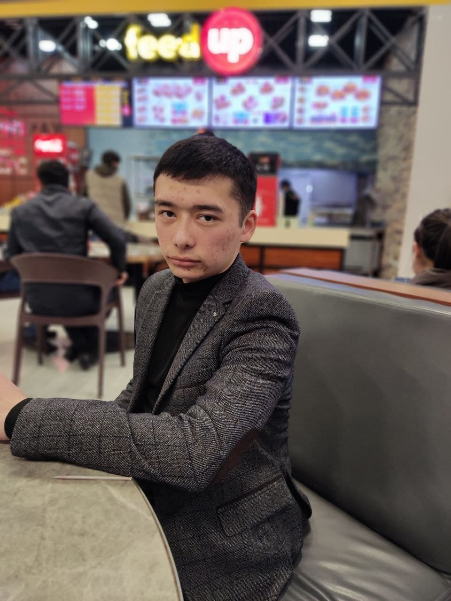

OMADBEK TESHABOEV
My fullname is Teshaboev Omadbek. I was born in 5 th September, 2003 in Marhamat town of
Andijon region.
I graduated 3-SBSS(Specialized boarding school) of Marhamat town.
Now I have
been studying INHA university in Tashkent for three month.

My classes
- Academic English Reading
- Academic English
- Calculus
- Physics
- Physics Experiment
- Object Oriented Programming
- Introduction to IT
My timetable
People who has a place in my heart
My family: My parents, my sisters and also my relationships. I can never show the position of my family in deep of my heart with my words.

 My friends: Jamshid, Islombek, Farrux, Temurbek, Erkinjon. They are my freinds from my childhood and we would be friend until the doomsday, Insha Allah. I can give up my love, my prestige for them. And Somebody may ask me " Why you have few friends ? I would say that " The number of your friends isn't important if this number includes fake friends, that is why loyalty and altruism of my friends is enough for me to be the best friend and also to trust them"
My friends: Jamshid, Islombek, Farrux, Temurbek, Erkinjon. They are my freinds from my childhood and we would be friend until the doomsday, Insha Allah. I can give up my love, my prestige for them. And Somebody may ask me " Why you have few friends ? I would say that " The number of your friends isn't important if this number includes fake friends, that is why loyalty and altruism of my friends is enough for me to be the best friend and also to trust them"

I'm missing My Home  My github page
My github page